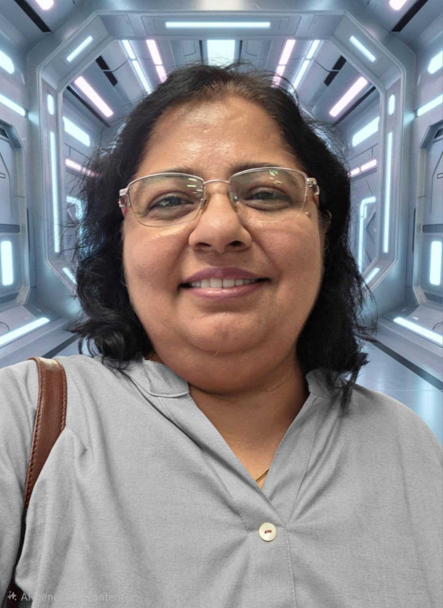

SVKM’s Narsee Monjee College of Commerce and Economics, Mumbai
Teaching Operations Research, Mathematics, Statistics and Computers in B.Com.

Statistics · Data Analysis · Research Methodology
SVKM’s Narsee Monjee College of Commerce and Economics, Mumbai
Explore ResearchAssistant Professor with academic experience in Statistics, Mathematics, Operations Research and Computer applications at undergraduate and postgraduate levels.
Ph.D. in Statistics. Research expertise includes Bayesian statistics, Bayesian computation, statistical modelling and reliability/life-testing models.
Current interests include research methodology, statistical data analysis, R, SPSS, AMOS, SmartPLS, Bayesian Structural Equation Modelling and consumer behaviour research.
Teaching Operations Research, Mathematics, Statistics and Computers in B.Com.
Teaching in self-finance courses.
Teaching at postgraduate level.
Statistics
Posterior Analysis for some Complex Failure Models
Statistics
Statistics
Bayesian Statistics and Bayesian Computation; posterior analysis and Gibbs sampling.
Statistical Modelling and Reliability/Life-testing Models.
Research Methodology and Quantitative Data Analysis.
AMOS, SmartPLS and Bayesian SEM.
Customer Satisfaction and Repurchase Intention.
Applied Statistics using R and SPSS.
Journal of Statistical Computation and Simulation, 71(3), 215–230.
Progress of Mathematics, 31(1,2), 83–102.
Communications in Statistics, Theory and Methods, 32(2), 381–405.
Metron – International Journal of Statistics, 62(1), 115–135.
The American Journal of Mathematical and Management Sciences, pp. 213–242.
Statistical Papers, 49, 59–85.
International Journal of Creative Research Thoughts, 8(5), 1098–1103.
International Journal of Research and Analytical Reviews, 9(3), 913–922.
IJFAN International Journal of Food and Nutritional Sciences, 11(3), 3241–3256.
International Journal of Advanced Scientific Research and Management, 9(1), 9–18.
International Journal of Innovative Research in Technology, 11(12), 9102–9106.
Presented “Interest Rate Sensitivity of SME Loan Defaults in India: Regression Analysis (2020–25) Using SPSS” at NM’s Finance Symposium.
Participated in an International FDP on AI-powered Research Writing, Systematic Literature Reviews and Journal Publication.
Participated in a workshop on Data Analysis with R Studio and AI.
Completed a 20-hour hands-on certificate course in Power BI + AI.
Participated in the ICSSR capacity-building programme “GenAI for Excellence in Higher Education and Research”.
Completed an Artificial Intelligence short-term/FDP programme with A+ grade under the MMTT Programme, Kurukshetra University.
Participated in a Research Information Management System workshop at INFLIBNET Centre, Gandhinagar.
Participated in the FDP “Data Analytics: Theory to Applications” (AIU and Chitkara University).
Invited lectures, conferences and workshops include Primary Data Collection, Bayesian statistics, statistical inference, reliability, R Programming, SPSS, Multivariate Data Analysis, SEM using AMOS/SmartPLS, Research Methodology, Data Analytics, AI in Teaching and Research, MOOC development and research publication. In 2013, chaired a poster session and contributed as rapporteur at the ISBA Regional Meeting and International Workshop/Conference on Bayesian Theory and Applications.
Assistant Professor
Statistics, Data Analysis & Research Methodology
SVKM’s Narsee Monjee College of Commerce and Economics, Mumbai